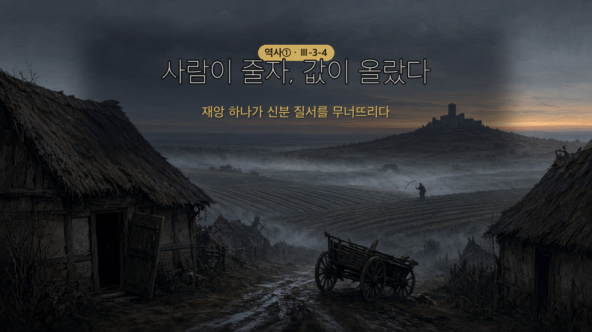

사람이 줄자, 값이 올랐다
흑사병(黑死病) — 페스트균이 일으킨 전염병. 14세기 유럽 인구의 약 3분의 1이 사망했다.
| 유행 전 | 유행 후 |
|---|---|
| 일할 사람 많음 → 농민은 흔한 존재 | 일할 사람 귀함 → 농민 몸값 상승 |
인구가 줄었는데 왜 농민이 세졌나 — 교과서가 말하는 인과는 이 순서다.
`흑사병` → `인구 감소` → `노동력 부족` → `영주가 농노 처우 개선` → `농민 지위 상승`
길드 — 도시의 상인·수공업자가 만든 동업 조합. 공동의 이익과 안전을 지키려고 결성했다. 자치권 — 도시가 스스로를 다스릴 권리. 도시민들이 영주에게 돈을 내거나 무력으로 저항해 얻어 냈다.
두 전쟁, 같은 결과
| 백년 전쟁 (1337~1453) | 장미 전쟁 | |
|---|---|---|
| 누가 | 영국 ↔ 프랑스 | 영국 내부 귀족끼리 |
| 왜 | 플랑드르 지배권 + 왕위 계승 | 왕위 계승 |
| 결과 | 프랑스 승리 → 중앙 집권 발판 | 봉건 영주 몰락 → 왕권 강화 |

🎙️ 지난 시간에 이런 질문을 남겼지 — "교황이 이겼던 싸움이 왜 나중엔 왕이 이기는 걸로 뒤집혔을까?" 오늘 그 답이 나와. 그런데 출발점이 좀 무서워. 14세기 유럽에서 사람이 셋 중 하나꼴로 죽었어. 흑사병이야. 그런데 그 재앙 뒤에 아무도 예상 못 한 일이 벌어져 — 살아남은 농민들의 처지가 좋아진 거야. 왜 그랬는지, 그리고 그게 어떻게 「나라」를 만들었는지 보러 가자.
- 봉건 사회가 해체되고 도시가 발전하는 과정을 파악할 수 있다.
- 중앙 집권 국가가 등장한 배경을 설명할 수 있다.
| 낱말 | 쉽게 말하면 | 한자 뜯어보기 | 문장 속에서 |
| 해체(解體) | 짜여 있던 것이 풀려 흩어짐 | 해(解, 풀) + 체(體, 몸) | "중세의 장원은 점차 해체되었다." |
| 길드 | 상인·수공업자의 동업 조합 | (외래어) | "길드를 만들어 도시를 운영하였다." |
| 자치권(自治權) | 스스로 다스릴 권리 | 자(自, 스스로) + 치(治, 다스림) | "도시민들은 자치권을 얻기도 하였다." |
| 중앙 집권(中央集權) | 힘이 가운데로 모임 | 집(集, 모을) + 권(權, 권력) | "프랑스는 중앙 집권 국가로 성장하였다." |
💡 오늘의 인과 한 줄 — 사람이 줄었다 → 일손이 귀해졌다 → 농민이 세졌다 → 장원이 무너졌다 → 왕이 세졌다. 이 사슬만 붙잡으면 오늘은 끝이야.
14세기 유럽에서 ①흑사병이 유행하여 인구가 크게 줄었다. 노동력이 부족해지자 영주들이 농노의 처우를 개선해 주면서 ②농민의 지위가 높아졌다. 그러나 일부 지역에서는 영주가 줄어든 수입을 보충하려고 오히려 농민들을 억압하여 ③농민 반란이 일어났다.
(교과서 원문: "14세기 유럽에서는 흑사병이 유행하여 인구가 크게 줄었다. 노동력이 부족해지자 영주들이 농노의 처우를 개선해 주면서 농민의 지위가 높아졌다. 그러나 일부 지역에서는 영주가 줄어든 수입을 보충하려고 오히려 농민들을 억압하여 농민 반란이 일어났다." — 비상교육 역사①(이병인) p.99)
🎙️ 잔인하지만 단순한 계산이야. 일할 사람이 셋에서 둘로 줄면, 남은 두 사람의 몸값이 오르잖아. 영주 입장에선 "떠나지 마세요, 조건 좋게 해 드릴게요" 하는 수밖에 없었던 거지. 요즘으로 치면 사람이 없어서 시급이 오르는 상황이야.
(교과서 원문: "페스트균이 일으키는 흑사병으로 유럽 인구의 약 3분의 1이 사망하였다. 사망하기 전 환자의 피부가 검게 변한다고 하여 흑사병이라고 불렸다." — 비상교육 역사①(이병인) p.99 날개 주석)
🧑🏫 지도 포인트 — 지도서 수업 주안점이 "흑사병의 유행, 화폐 경제의 발달이 농민의 지위 향상으로 이어졌음을 강조한다"이다. 두 원인(전염병·화폐)이 같은 결과로 모인다는 구조를 판서로 잡아 줄 것. 학생들은 흑사병만 기억하고 화폐 쪽을 흘린다.
⚠️ 그런데 모두가 좋아진 건 아니야. 어떤 영주는 반대로 굴었어 — 수입이 줄었으니 농민을 더 쥐어짜서 메우려 한 거지. 그래서 프랑스와 영국에서 큰 농민 반란이 터져. 같은 재앙인데 지역마다 결과가 갈렸다는 것, 이게 중요해.
상업과 도시의 성장으로 화폐 사용이 늘자 영주는 노동력이나 생산물 대신 ④화폐로 세금을 거두었고, 농노에게 돈을 받고 농노 신분에서 해방하여 주기도 하였다. 이러한 변화 속에 중세의 ⑤장원은 점차 해체되었고, 중세 봉건 사회는 크게 흔들렸다.
(교과서 원문: "한편, 상업과 도시의 성장으로 화폐 사용이 늘자 영주는 노동력이나 생산물 대신 화폐로 세금을 거두었고, 농노에게 돈을 받고 농노 신분에서 해방하여 주기도 하였다. 이러한 변화 속에 중세의 장원은 점차 해체되었고, 중세 봉건 사회는 크게 흔들렸다." — 비상교육 역사①(이병인) p.99)
🎙️ 여기 진짜 반전이 있어. 농노가 자유를 얻은 방법이 뭐였게? 반란도, 전쟁도 아니야. 돈을 주고 샀어. 영주 입장에선 "땅에 묶어 두는 것보다 목돈 받는 게 낫다"고 계산한 거고. 지난 시간에 배운 봉건 사회를 기억해 봐 — "지켜 줄게, 대신 넌 여길 못 떠나"였잖아. 그 거래가 화폐로 풀린 거야.
🧑🏫 지도 포인트 — "돈으로 자유를 샀다"가 이 단계의 핵심이고 3-3-1의 회수 지점이다. 봉건 사회를 "지켜 줄게, 대신 못 떠나"로 배웠으니, 그 계약이 화폐로 풀렸다고 이어 주면 두 차시가 한 줄로 꿰인다.
11세기 이후 농업의 발달로 잉여 생산물이 늘어나면서 상업이 활발해졌고, 원거리 무역이 늘어나며 도시가 성장하였다. 도시의 상인과 수공업자들은 공동의 이익과 안전을 지키고자 동업 조합인 ⑥길드를 만들어 도시를 운영하였다. 이 과정에서 부를 쌓은 도시민들은 영주에게 돈을 내거나 무력으로 저항하여 ⑦자치권을 얻기도 하였다.
(교과서 원문: "11세기 이후 농업의 발달로 잉여 생산물이 늘어나면서 상업이 활발해졌다. 원거리 무역이 늘어나자 지중해와 발트해, 북해를 중심으로 한 기존의 도시들이 더욱 성장하였고, 새로운 도시도 생겨났다. 도시의 상인과 수공업자들은 공동의 이익과 안전을 지키고자 동업 조합인 길드를 만들어 도시를 운영하였다. 이 과정에서 부를 쌓은 도시민들은 영주에게 돈을 내거나 무력으로 저항하여 자치권을 얻기도 하였다." — 비상교육 역사①(이병인) p.100)
💡 자치권이 뭐가 그렇게 대단한가? 그때까지 모든 땅은 누군가의 영주가 다스렸어. 그런데 도시가 "우리 일은 우리가 정한다"는 권리를 얻은 거야. 중세 유럽에 영주가 아닌 사람들이 스스로 운영하는 공간이 처음 생긴 셈이지.
장원이 해체되면서 영주의 힘이 점차 약해지고, 화약과 대포 등 새로운 무기가 등장하여 ⑧기사 계급이 몰락하였다. 반면 새롭게 성장한 도시 상공업자들은 국왕을 경제적으로 돕거나 관리로 일하며 세력을 키웠다. 유럽 각국의 국왕은 이들의 지원에 힘입어 관료와 군대를 정비하며 ⑨왕권을 강화해 나갔다.
(교과서 원문: "장원이 해체되면서 영주의 힘이 점차 약해지고, 화약과 대포 등 새로운 무기가 등장하여 기사 계급이 몰락하였다. 반면, 새롭게 성장한 도시 상공업자들은 국왕을 경제적으로 돕거나 관리로 일하며 세력을 키워 나갔다. 유럽 각국의 국왕은 이들의 지원에 힘입어 관료와 군대를 정비하며 왕권을 강화해 나갔다." — 비상교육 역사①(이병인) p.100)
🎙️ 화약이 왜 기사를 무너뜨렸을까? 기사는 어릴 때부터 훈련받고 비싼 갑옷과 말을 갖춰야 하는 소수 정예였어. 그런데 대포 한 방이면 성벽이 뚫리고, 총을 든 평민 병사도 갑옷 입은 기사를 쓰러뜨릴 수 있게 된 거야. 수십 년 갈고닦은 실력이 화약 앞에서 값이 떨어진 거지.
⚠️ 지난 시간 질문의 답이 여기 있어. "왜 아비뇽 유수 때는 왕이 이겼나?" — 이때쯤 왕은 관료와 군대와 세금을 갖춘 사람이 되어 있었거든. 교황의 힘은 신앙에서 나왔는데, 왕의 힘은 이렇게 손에 잡히는 것들로 채워지고 있었어.
🧑🏫 지도 포인트 — 이 단계가 3-3-2 「더 생각해 보기」의 답이다. 그때 "230년 사이에 무엇이 달라졌나"를 물어 두었으니, 여기서 "그 답이 오늘 나왔다"고 명시적으로 회수할 것. 이 연결을 하면 학생은 두 차시를 한 사건으로 기억한다.
14세기 중반 영국과 프랑스 사이에서 ⑩백년 전쟁이 일어났다. 전쟁에서 승리한 프랑스는 중앙 집권 국가로 성장하는 발판을 마련하였다. 이후 영국에서는 왕위 계승을 둘러싸고 ⑪장미 전쟁이 일어났는데, 이 전쟁에 참여한 많은 봉건 영주들이 힘을 잃으면서 상대적으로 왕권이 강해졌고 영국도 중앙 집권 국가의 모습을 갖추어 갔다.
(교과서 원문: "14세기 중반 영국과 프랑스 사이에서 백년 전쟁이 일어났다(1337~1453). 전쟁에서 승리한 프랑스는 중앙 집권 국가로 성장하는 발판을 마련하였다. 이후 영국에서는 왕위 계승을 둘러싸고 장미 전쟁이 일어났다. 이 전쟁에 참여한 많은 봉건 영주들이 힘을 잃으면서 상대적으로 왕권이 강해졌고, 영국도 중앙 집권 국가의 모습을 갖추어 갔다." — 비상교육 역사①(이병인) p.101)
🎙️ 전쟁이 왕권을 강하게 만든다는 게 이상하지? 비결은 이거야 — 전쟁에 나간 건 영주와 기사들이었고, 거기서 죽거나 재산을 잃은 것도 그들이었어. 싸움이 끝나고 보니 경쟁자가 사라져 있던 거지. 영국 장미 전쟁이 특히 그랬어.
싸움의 씨앗은 두 가지였다. 하나는 경제적으로 중요한 플랑드르 지방의 지배권, 다른 하나는 프랑스 왕 샤를 4세가 후계자 없이 죽으면서 터진 왕위 계승 다툼이다.
(교과서 원문: "영국과 프랑스는 경제적으로 중요한 지역인 플랑드르 지방의 지배권을 놓고 갈등을 빚었다. 이러한 가운데 프랑스의 왕 샤를 4세가 후계자 없이 죽자 영국과 프랑스가 왕위 계승 문제로 다투면서 백년 전쟁이 일어났다." — 같은 책 p.101 「궁금해 이 사건!」)
전쟁 초반은 프랑스의 참패였다. 수도 파리까지 함락됐다. 그런데 잔 다르크가 나타나 프랑스군의 사기를 되살렸고, 전세를 뒤집은 프랑스가 연달아 이기면서 전쟁은 프랑스의 승리로 끝났다.
(교과서 원문: "전쟁 초반 프랑스는 영국에 밀려 수도인 파리까지 함락되는 상황에 처하였다. 그러나 잔 다르크가 활약하면서 프랑스군의 사기가 올랐다. 전세를 역전한 프랑스군이 전쟁에서 연달아 이기면서 결국 백년 전쟁은 프랑스의 승리로 끝이 났다." — 같은 책 p.101)
🎙️ 두 왕이 서로 이렇게 우겼대. 영국 에드워드 3세 — "나의 어머니가 샤를 4세의 동생이오. 왕의 조카인 내가 왕위를 이어받아야 하오." 프랑스 필리프 6세 — "조카보다는 사촌인 내가 마땅하오. 무엇보다 영국 왕이 프랑스 왕이 될 수는 없소." … 이 말싸움이 116년을 갔어.
🎯 지도서가 명시한 수업 방법이 여기다 — "잔 다르크 이야기로 백년 전쟁의 전개와 결과를 확인한다." 2026-08-25 보강 전까지 개념편에 '잔 다르크'라는 이름이 한 번도 없었다. 지도서가 이 이름으로 차시를 끌라고 했는데 학생 자료엔 빠져 있던 것.
⚠️ 연도(1337~1453)는 빈칸으로 내지 않는다(역사 룰). 다만 116년이라는 길이 자체는 학생 반응이 좋으니 구두로 쓸 것 — "너희가 태어나기 훨씬 전부터 시작해서 할머니의 할머니 때까지."
플랑드르는 지금의 벨기에·네덜란드 남부 일대로, 모직물 산업의 중심이었다(교과서엔 '경제적으로 중요한 지역'으로만 나옴). 왜 중요했는지 물으면 이 정도까지만.
오늘 배운 변화를 순서대로 이어 보자. 빈칸에 알맞은 말을 써넣으면 하나의 사슬이 완성돼.
| 순서 | 일어난 일 |
| 1 | 흑사병이 유행하다 |
| 2 | 인구가 크게 줄어 노동력이 부족해지다 |
| 3 | 영주가 농노의 처우를 개선하다 |
| 4 | 농민의 지위가 높아지다 |
| 5 | 화폐로 세금을 내고, 돈으로 신분에서 풀려나다 |
| 6 | 장원이 해체되고 영주의 힘이 약해지다 |
| 7 | 기사가 몰락하고 도시 상공업자가 국왕을 돕다 |
| 8 | 왕권이 강해져 중앙 집권 국가가 등장하다 |
🧑🏫 채점 관점 — 표현이 달라도 인과의 자리가 맞으면 인정한다(예: 2번을 "사람이 많이 죽어서 일할 사람이 없어짐"으로 써도 O). ⚠️ 4번에 "농민이 자유로워졌다"만 쓰면 5번과 겹치므로 지위 상승으로 유도. 8번이 오늘의 도착점이므로 여기가 비면 개별 지도.
교과서 100쪽 「흑사병의 유행에 따른 변화」 그래프를 보자. 13~15세기 영국의 인구와 농민 임금이 함께 그려져 있어.
💬 인구가 감소한 시기에 농민의 임금은 어떻게 변했는지 쓰고, 왜 그렇게 되었는지 이유도 함께 써 보자.
모범답안: 인구가 크게 줄어든 시기에 농민의 임금은 오히려 올랐다. 일할 사람이 부족해지자 영주들이 농민을 붙잡아 두기 위해 더 나은 조건을 제시해야 했기 때문이다.
🧑🏫 채점 관점 — "임금이 올랐다"(그래프 읽기)와 "일손이 부족해서"(이유)가 둘 다 있어야 도달. 그래프만 읽고 이유가 없으면 중간. ⚠️ 그래프의 두 선이 반대로 움직인다는 것을 못 읽는 학생이 있으니 축을 짚어 줄 것(왼쪽 축=임금 %, 오른쪽 축=인구 백만 명).
| 번호 | 문장 | O / X |
| 1 | 흑사병으로 인구가 줄자 노동력이 부족해져 농민의 지위가 높아졌다. | O |
| 2 | 흑사병 이후 모든 지역에서 농민의 처지가 좋아졌다. | X |
| 3 | 영주는 농노에게 돈을 받고 신분에서 해방해 주기도 하였다. | O |
| 4 | 길드는 영주가 도시를 다스리기 위해 만든 조직이다. | X |
| 5 | 백년 전쟁에서 승리한 프랑스는 중앙 집권 국가로 성장하는 발판을 마련하였다. | O |
OX 해설
1 O — 오늘의 핵심 인과.
2 X — 핵심 함정. 일부 영주는 줄어든 수입을 메우려 오히려 농민을 억압했고, 그 결과 농민 반란(자크리의 난·와트 타일러의 난)이 일어났다. "모든/항상"이 들어간 문장은 일단 의심하게 지도할 것.
3 O — 돈을 주고 신분에서 풀려났다.
4 X — 주체 뒤집기 함정. 길드는 상인과 수공업자가 공동의 이익과 안전을 위해 만든 동업 조합이다. 오히려 도시민들은 영주에게서 자치권을 얻어 냈다.
5 O — 장미 전쟁을 거친 영국도 뒤이어 중앙 집권 국가의 모습을 갖춘다.
발문: 지난 시간에 우리는 이렇게 물었다 — "카노사에서는 황제가 굽혔는데, 아비뇽에서는 왜 교황이 끌려갔을까?" 오늘 배운 내용에서 왕의 힘이 강해진 과정을 두 가지 이상 들어 한두 문장으로 서술하시오.
모범답안: 장원이 해체되면서 영주의 힘이 약해졌고, 화약과 대포가 등장해 기사 계급이 몰락하였다. 여기에 도시 상공업자들이 국왕을 경제적으로 돕고 관리로 일하면서, 국왕은 관료와 군대를 갖추고 왕권을 강화할 수 있었다. 그래서 교황과 다시 부딪쳤을 때는 왕이 우위에 서게 되었다.
| 수준 | 기준 |
| 상 | 왕권 강화의 경로를 두 가지 이상(장원 해체·기사 몰락·도시 상공업자의 지원·관료와 군대 정비) 들고, 그것이 교황과의 관계 역전으로 이어졌다는 연결까지 쓴다 |
| 중 | 왕권 강화 요인을 두 가지 이상 들었으나 아비뇽 유수와의 연결이 없다 |
| 하 | 한 가지만 들거나, "왕이 세져서"처럼 결과를 원인으로 되풀이한다 |
🧑🏫 지도 참고 — 이 문항은 3-3-2와 3-3-4를 잇는 연결 문항이다. 문항은행 적립 시 두 차시 공통으로 표시할 것. 답이 막히면 4단계 ⚠️ 콜아웃("교황의 힘은 신앙, 왕의 힘은 손에 잡히는 것")을 먼저 읽게 한다.
장원이 무너지고 도시가 자라던 그 무렵, 이탈리아의 도시들에서는 전혀 다른 일이 시작되고 있었어. 사람들이 천 년 전 그리스·로마를 다시 꺼내 보기 시작한 거야 — 다음 시간 「유럽에서 르네상스가 일어나다」.